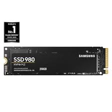

|  | Solid State Drives, is a solid-state storage device that uses integrated circuit assemblies to store data persistently, typically using flash memory, and functioning as secondary storage in the hierarchy of computer storage. It is also sometimes called a semiconductor storage device, a solid-state device or a solid-state disk, even though SSDs lack the physical spinning disks and movable read-write heads used in hard disk drives (HDDs) and floppy disks. SSDs can use traditional HDD interfaces and form factors, or newer interfaces and form factors that exploit specific advantages of the flash memory in SSDs. Traditional interfaces (e.g. SATA and SAS) and standard HDD form factors allow such SSDs to be used as drop-in replacements for HDDs in computers and other devices. Newer form factors such as mSATA, M.2, U.2, NF1/M.3/NGSFF, XFM Express (Crossover Flash Memory, form factor XT2) and EDSFF (formerly known as Ruler SSD) and higher speed interfaces such as NVM Express (NVMe) over PCI Express (PCIe) can further increase performance over HDD performance |